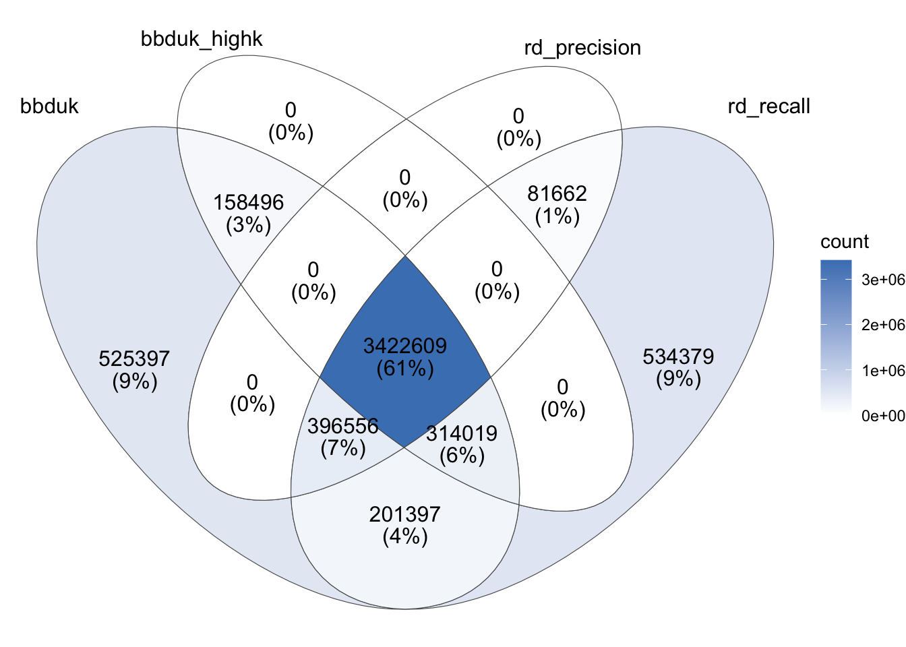

A useful step in processing wastewater MGS data is the removal of (primarily bacterial) ribosomal RNA sequences. These often make up a substantial fraction of all reads in the dataset, and their removal can both speed up downstream processing and potentially improve certain downstream metrics (e.g. library complexity). Our current pipeline counts and lists rRNA reads using Ribodetector, a deep-learning-based tool that is sensitive and specific, but slow. This slowness makes it annoying to work Ribodetector into our broader pipeline – for example, the time taken to classify reads with Ribodetector is much more than the time saved on downstream steps by excluding rRNA reads from our pipeline.
I wanted to see if there were alternative rRNA detection methods that gave good-enough results while being fast enough to include in the preprocessing phase of the pipeline. To that end, I investigated bbduk, a k-mer based contamination-detection approach suggested in this biostars thread1.
To compare these tools, I applied bbduk and Ribodetector to three samples from pre-existing wastewater metagenomics datasets. Two of these, from Johnson and Crits-Christoph, were the same as in my last methods comparison post. I initially also used the same sample from the third dataset, Rothman et al. (2021), but switched to a different sample when I realised the first had undergone panel enrichment for respiratory viruses and so wasn’t truly untargeted.
For each sample, I ran rRNA removal on the FASTQ files that had been preprocessed with FASTP (without deduplication. For SortMeRNA and bbduk, I used reference files (1,2) downloaded from the SILVA database.
The commands I ran were as follows:
Ribodetector (high MCC mode, X=75 for Johnson & Crits-Cristoph & 100 for Rothman):
I started with the sample from Johnson, which we already know has a high fraction of rRNA reads (46.2% on our sequencing dashboard).
High-level output
Running Ribodetector in high-MCC mode set took 1266 seconds (just over 21 minutes). The tool identified 6.87M out of 15.25M read pairs as ribosomal: 45.0%. Re-running in high-recall mode took a similar amount of time (1264 seconds) and identified 7.76M reads as ribosomal: 50.9%.
Running bbduk took a total of 36 seconds. The tool identified 7.57M out of 15.25M read pairs as ribosomal: 49.63%, a little under the result for Ribodetector’ high-recall mode.
The default bbduk command given above uses the default k-mer size of 27. Increasing k will increase the precision and decrease the recall of the bbduk algorithm, potentially moving the results closer to the high-MCC version of Ribodetector. After some experimentation, I found that a k-mer length of 43 returned a ribosomal fraction of 45.39%, only slightly above high-MCC ribodetector.
Overlap between tools
To compare the output of Ribodetector (high-MCC and high-recall) and bbduk (low and high k) in more detail, I extracted and downloaded the read IDs from their respective rRNA files and compared the overlap between the lists of IDs:
g_venn_johnson<-ggVennDiagram(johnson_read_ids, label_alpha=0, edge_size =0)+scale_fill_gradient(low ="#FFFFFF", high ="#4981BF")g_venn_johnson
Some observations:
As expected, the rRNA reads returned by bbduk with a high k-value are a strict subset of those returned with a low k-value, and those returned by Ribodetector in high-precision mode are a strict subset of those returned in high-recall mode.
Across all read IDs identified as ribosomal under any of the four conditions, 82% (6.42M read pairs) were identified as such by all four conditions. Of those that remain:
5% are identified by all conditions except high-k bbduk;
6% are identified by all conditions except high-precision Ribodetector;
2% are identified by both high-recall conditions, but neither high-precision condition;
3% are identified by high-recall Ribodetector only;
1% are identified by low-k bbduk only;
1% by some other combination of conditions
Overall, it seems that, while the two high-recall methods exhibit quite good agreement (sharing >95% of identified sequences), the two high-precision methods agree less well (with >10% of all identified sequences identified by one but not the other).
2. Rothman et al. (SRR14530880)
I next repeated the analysis on a non-panel-enriched sample from Rothman et al. (2023). In this case, I didn’t have a clear advance idea of how much rRNA was present in the sample, though I didn’t have much reason to expect it to be much lower than Johnson.
In this case, I ran both bbduk and Ribodetector with 16 threads, so I could run two processes in parallel on my EC2 instance. Running bbduk with default settings (k=27) identified 7.41M out of 13.61M reads as ribosomal (54.43%). Running bbduk with k=43 identified 5.14M reads as ribosomal (37.78%). Both iterations ran in under 40 seconds.
Running Ribodetector in high-MCC mode identified 6.75M reads (49.63%) as ribosomal. Running it in high-recall mode identified 7.27M reads (53.39%) as ribosomal. Both iterations took roughly 43 minutes.
The overlap in reads identified by different tools in this case looked as follows:
g_venn_rothman<-ggVennDiagram(rothman_read_ids, label_alpha=0, edge_size =0)+scale_fill_gradient(low ="#FFFFFF", high ="#4981BF")g_venn_rothman
As before, the rRNA reads returned by bbduk with a high k-value are a strict subset of those returned with a low k-value, and those returned by Ribodetector in high-precision mode are a strict subset of those returned in high-recall mode. This time, only 64% of putative rRNA reads were agreed on by all four conditions; most of the rest were only identified by all methods except high-k bbduk. The agreement between the high-recall methods remains good, but less good than for Johnson, with 6% of putative rRNA reads identified only by low-k bbduk and 2% only by high-recall Ribodetector.
3. Crits-Christoph et al. (SRR23998357)
Finally, we have the sample from Crits-Christoph et al. (2021). This was by far the biggest sample of the three, with a total of 47.47M read pairs. It is also the only sample that, to my knowledge, explicitly included ribodepletion in its methods.
In this case, I ran both bbduk and Ribodetector with 16 threads, so I could run two processes in parallel on my EC2 instance. Under these conditions, running bbduk with k=27 identified 5.02M read pairs (10.57%) as ribosomal; running it with k=43 identified 3.90M (8.21%). These runs took 90 and 79 seconds, respectively.
Running Ribodetector in high-MCC mode identified 3.90M (8.21%) as ribosomal; running it in high-recall mode identified 4.95M (10.42%). Both runs took well over an hour.
The overlap in reads identified by different tools in this case looked as follows:
g_venn_cc<-ggVennDiagram(cc_read_ids, label_alpha=0, edge_size =0)+scale_fill_gradient(low ="#FFFFFF", high ="#4981BF")g_venn_cc

To my surprise, while the total number of reads identified as ribosomal by the two high-recall methods showed good agreement, the specific reads identified showed much more divergence than in the other two samples – in total, over 20% of reads identified as ribosomal by at least one method showed disagreement between the two high-recall methods. This made validating the results before using any one method a higher priority for me.
4. Validation
In the absence of an external gold-standard ribodetection algorithm, it’s difficult to directly validate their performance at ribodetection. We can, however, validate their performance relative to the needs of our pipelines by running their outputs through Kraken and seeing which taxa they map to. In particular, I wanted to ensure that as few “ribosomal” reads as possible were mapping to viruses.
To do this, I first restricted each dataset to “controversial” reads: those that showed some disagreement between methods. I assumed that reads that all four methods classified as ribosomal were in fact ribosomal, and ditto for those all four methods classified as non-ribosomal. This left 1.42M reads for the Johnson sample, 2.76M reads for the Rothman sample and 2.21M reads for the Crits-Christoph sample: 6.39M reads total. I downsampled each read file to these reads using seqtk subseq, concatenated the reads from all three files together, and ran the concatenated files through kraken2, using the same 16GB version of the Standard database used in our current MGS pipeline. I repeated this for reads identified as ribosomal by each method in turn, and used kraken2’s --reportfunction to get a high-level sense of the taxonomic breakdowns for each method. The results were as follows:
Code
ribo_taxa_path<-file.path(data_dir, "/ribodetection-domains.csv")ribo_taxa<-read_csv(ribo_taxa_path, show_col_types =FALSE)ribo_taxa_gathered<-ribo_taxa%>%gather(classification, read_percentage, -dataset)%>%mutate(classification =fct_inorder(classification))g_ribo_taxa<-ggplot(ribo_taxa_gathered, aes(x=dataset, y=read_percentage, fill =classification))+geom_col(position ="stack")+scale_y_continuous("% of controversial ribosomal reads")+theme_base+theme(axis.title.x =element_blank())g_ribo_taxa
Code
g_ribo_viruses<-ggplot(filter(ribo_taxa_gathered, classification=="Viruses"), aes(x=dataset, y=read_percentage, fill =classification))+geom_col(position ="stack")+scale_y_continuous("% of controversial ribosomal reads")+theme_base+theme(axis.title.x =element_blank())g_ribo_viruses
Unsurprisingly, in all cases, the vast majority of reads were either unclassified or mapped to bacteria. In all cases, a very small but nonzero fraction of reads mapped to viruses – this fraction was by far the highest for high-recall Ribodetector (0.66%), and lowest for high-MCC ribodetector (0.02%); both bbduk methods were intermediate (0.05%).
Given that we know we have at least some viral reads getting misassigned as viral2, how good/bad is this? What fraction of all viral reads are being identified as viral by each method? Digging into the individual datasets, kraken2 assigns the following total numbers of viral reads to each sample:
1,000,084 reads to the Johnson sample (3.28% of all reads)
5,667,635 reads to the Rothman sample (20.82% of all reads)
246,193 to the Crits-Christoph sample (0.26% of all reads)
In total (including “uncontroversial” assignments) the total number of viral reads classified as ribosomal by each method for each sample are as follows:
Code
viral_mis_path<-file.path(data_dir, "ribodetection-viruses.csv")viral_mis<-read_csv(viral_mis_path, show_col_types =FALSE)viral_mis_gathered<-gather(viral_mis, method, n_viral_reads, -sample, -raw)%>%mutate(viral_reads_percentage =n_viral_reads/raw*100, sample =fct_inorder(sample))g_viral_mis<-ggplot(viral_mis_gathered, aes(x=sample, y=viral_reads_percentage, fill =method))+geom_col(position ="dodge")+scale_y_continuous(breaks =seq(0,2,0.2), name ="% of viral reads identified as ribosomal")+scale_x_discrete(name ="Source dataset", labels =c("Johnson", "Rothman", "Crits-Christoph", "[geometric mean]"))+theme_baseg_viral_mis
High-MCC Ribodetector performs the best on average, returning the lowest number of viral reads for two out of three samples. Running bbduk with k=43 achieves the best result on one out of three samples, and average results only marginally worse than that of high-MCC Ribodetector. bbduk with k=27 does somewhat worse, but still consistently returns less than one third of one percent of all viral reads. High-recall Ribodetector consistently performs much worse than the other methods, frequently returning over 1% of viral reads as ribosomal.
In general, then, the levels of viral misclassification by bbduk are low, but not as low as high-MCC-mode Ribodetector. On the other hand, bbduk consistently runs 1-2 orders of magnitude more quickly than Ribodetector, a difference that compounds when attempting to run ribodetection on multiple samples. This difference in speed would make a big difference to the practicality of comprehensive integration of ribodetection into our current pipeline. Whether this is worth a small increase in viral misclassification, however, is ultimately a decision for the team.
Footnotes
I also began investigating SortMeRNA, a published tool based on heuristic alignment, which generally appeared to perform second-best on the quality metrics from the Ribodetector paper. However, I quickly dropped SortMeRNA, as it was substantially slower than Ribodetector.↩︎
At least as far as Kraken2 is concerned. I don’t entirely trust Kraken2’s assignments, but am going with them for now. I might come back and dig more into this aspect of things later if it seems useful.↩︎
Source Code
---title: "Comparing Ribodetector and bbduk for rRNA detection"subtitle: "In search of quick rRNA filtering."author: "Will Bradshaw"date: 2023-10-16format: html: code-fold: true code-tools: true code-link: true df-print: pagededitor: visualtitle-block-banner: black---```{r}#| label: load-packages#| include: falselibrary(tidyverse)library(patchwork)library(ggrepel)library(ggVennDiagram)library(plyr)source("../scripts/aux_plot-theme.R")```**See also:**- [Comparing FASTP and AdapterRemoval for MGS pre-processing](https://data.securebio.org/wills-public-notebook/notebooks/2023-10-12_fastp-vs-adapterremoval.html)A useful step in processing wastewater MGS data is the removal of (primarily bacterial) ribosomal RNA sequences. These often make up a substantial fraction of all reads in the dataset, and their removal can both speed up downstream processing and potentially improve certain downstream metrics (e.g. library complexity). Our current pipeline counts and lists rRNA reads using [Ribodetector](https://doi.org/10.1093/nar/gkac112), a deep-learning-based tool that is sensitive and specific, but slow. This slowness makes it annoying to work Ribodetector into our broader pipeline -- for example, the time taken to classify reads with Ribodetector is much more than the time saved on downstream steps by excluding rRNA reads from our pipeline.I wanted to see if there were alternative rRNA detection methods that gave good-enough results while being fast enough to include in the preprocessing phase of the pipeline. To that end, I investigated [bbduk](https://jgi.doe.gov/data-and-tools/software-tools/bbtools/bb-tools-user-guide/bbduk-guide/), a k-mer based contamination-detection approach suggested in [this biostars thread](https://www.biostars.org/p/184791/#254402)[^1].[^1]: I also began investigating [SortMeRNA](https://doi.org/10.1093/bioinformatics/bts611), a published tool based on heuristic alignment, which generally appeared to perform second-best on the quality metrics from the Ribodetector paper. However, I quickly dropped SortMeRNA, as it was substantially slower than Ribodetector.To compare these tools, I applied bbduk and Ribodetector to three samples from pre-existing wastewater metagenomics datasets. Two of these, from Johnson and Crits-Christoph, were the same as in my [last methods comparison post](https://data.securebio.org/wills-public-notebook/notebooks/2023-10-12_fastp-vs-adapterremoval.html). I initially also used the same sample from the third dataset, Rothman et al. (2021), but switched to a different sample when I realised the first had undergone panel enrichment for respiratory viruses and so wasn't truly untargeted.| Study | Bioproject | Sample ||-------------------|-----------------------------------|-------------------|| Rothman et al. (2021) | [PRJNA729801](https://www.ebi.ac.uk/ena/browser/view/PRJNA729801) | SRR14530880 || Crits-Cristoph et al. (2021) | [PRJNA661613](https://www.ebi.ac.uk/ena/browser/view/PRJNA661613) | SRR23998357 || Johnson (2023) | N/A | COMO4 |For each sample, I ran rRNA removal on the FASTQ files that had been preprocessed with FASTP (without deduplication. For SortMeRNA and bbduk, I used reference files ([1](https://www.arb-silva.de/fileadmin/silva_databases/release_138.1/Exports/SILVA_138.1_LSURef_NR99_tax_silva.fasta.gz),[2](https://www.arb-silva.de/fileadmin/silva_databases/release_138.1/Exports/SILVA_138.1_SSURef_NR99_tax_silva.fasta.gz)) downloaded from the [SILVA database](https://www.arb-silva.de/).The commands I ran were as follows:- Ribodetector (high MCC mode, X=75 for Johnson & Crits-Cristoph & 100 for Rothman):``` ribodetector_cpu --len X --ensure rrna --threads 28 --chunk_size 512 --input <fastp-file-1> <fastp-file-2> --o <non-rrna-file-1> <non-rrna-file-2> --rrna <rrna-file-1> <rrna-file-2> COMO4_ribodetector_failed_1.fastq.gz COMO4_ribodetector_failed_2.fastq.gz ```- Ribodetector (high recall mode, X as above):``` ribodetector_cpu --len X --ensure norrna --threads 28 --chunk_size 512 --input <fastp-file-1> <fastp-file-2> --o <non-rrna-file-1> <non-rrna-file-2> --rrna <rrna-file-1> <rrna-file-2> COMO4_ribodetector_failed_1.fastq.gz COMO4_ribodetector_failed_2.fastq.gz ```- bbduk (Y = 27 or 43):``` bbduk.sh in=<fastp-file-1> in2=<fastp-file-2> ref=../ribokmers_lsu.fasta.gz,../ribokmers_ssu.fasta.gz out=<non-rrna-file-1> out2=<non-rrna-file-2> outm=<rrna-file-1> outm2=<rrna-file-2> stats=<stats-file> threads=28 k=Y ```# 1. Johnson (COMO4)I started with the sample from Johnson, which we already know has a high fraction of rRNA reads (46.2% on our [sequencing dashboard](https://data.securebio.org/mgs-counts/)).## High-level outputRunning Ribodetector in high-MCC mode set took **1266 seconds** (just over 21 minutes). The tool identified 6.87M out of 15.25M read pairs as ribosomal: 45.0%. Re-running in high-recall mode took a similar amount of time (1264 seconds) and identified 7.76M reads as ribosomal: 50.9%.Running bbduk took a total of 36 seconds. The tool identified 7.57M out of 15.25M read pairs as ribosomal: 49.63%, a little under the result for Ribodetector' high-recall mode.The default bbduk command given above uses the default k-mer size of 27. Increasing *k* will increase the precision and decrease the recall of the bbduk algorithm, potentially moving the results closer to the high-MCC version of Ribodetector. After some experimentation, I found that a k-mer length of 43 returned a ribosomal fraction of 45.39%, only slightly above high-MCC ribodetector.## Overlap between toolsTo compare the output of Ribodetector (high-MCC and high-recall) and bbduk (low and high *k*) in more detail, I extracted and downloaded the read IDs from their respective rRNA files and compared the overlap between the lists of IDs:```{r}#| label: rrna-reads-johnsondata_dir <-"../data/2023-10-16_ribodetection/"johnson_bbduk_reads_path <-file.path(data_dir, "COMO4_bbduk_failed_ids.txt")johnson_bbduk_highk_reads_path <-file.path(data_dir, "COMO4_bbduk_highk_failed_ids.txt")johnson_rd_precision_reads_path <-file.path(data_dir, "COMO4_ribodetector_failed_ids_1.txt")johnson_rd_recall_reads_path <-file.path(data_dir, "COMO4_ribodetector_recall_failed_ids_1.txt")johnson_bbduk_reads <-readLines(johnson_bbduk_reads_path)johnson_bbduk_highk_reads <-readLines(johnson_bbduk_highk_reads_path)johnson_rd_precision_reads <-readLines(johnson_rd_precision_reads_path)johnson_rd_recall_reads <-readLines(johnson_rd_recall_reads_path)johnson_read_ids <-list(bbduk = johnson_bbduk_reads,bbduk_highk = johnson_bbduk_highk_reads,rd_precision = johnson_rd_precision_reads,rd_recall = johnson_rd_recall_reads)``````{r}#| label: rrna-overlap-venn-johnsong_venn_johnson <-ggVennDiagram(johnson_read_ids, label_alpha=0, edge_size =0) +scale_fill_gradient(low ="#FFFFFF", high ="#4981BF")g_venn_johnson```Some observations:- As expected, the rRNA reads returned by bbduk with a high k-value are a strict subset of those returned with a low k-value, and those returned by Ribodetector in high-precision mode are a strict subset of those returned in high-recall mode.- Across all read IDs identified as ribosomal under any of the four conditions, 82% (6.42M read pairs) were identified as such by all four conditions. Of those that remain: - 5% are identified by all conditions except high-k bbduk; - 6% are identified by all conditions except high-precision Ribodetector; - 2% are identified by both high-recall conditions, but neither high-precision condition; - 3% are identified by high-recall Ribodetector only; - 1% are identified by low-k bbduk only; - 1% by some other combination of conditions- Overall, it seems that, while the two high-recall methods exhibit quite good agreement (sharing \>95% of identified sequences), the two high-precision methods agree less well (with \>10% of all identified sequences identified by one but not the other).# 2. Rothman et al. (SRR14530880)I next repeated the analysis on a non-panel-enriched sample from Rothman et al. (2023). In this case, I didn't have a clear advance idea of how much rRNA was present in the sample, though I didn't have much reason to expect it to be much lower than Johnson.In this case, I ran both bbduk and Ribodetector with 16 threads, so I could run two processes in parallel on my EC2 instance. Running bbduk with default settings (k=27) identified 7.41M out of 13.61M reads as ribosomal (54.43%). Running bbduk with k=43 identified 5.14M reads as ribosomal (37.78%). Both iterations ran in under 40 seconds.Running Ribodetector in high-MCC mode identified 6.75M reads (49.63%) as ribosomal. Running it in high-recall mode identified 7.27M reads (53.39%) as ribosomal. Both iterations took roughly 43 minutes.The overlap in reads identified by different tools in this case looked as follows:```{r}#| label: rrna-reads-rothmanrothman_bbduk_reads_path <-file.path(data_dir, "SRR14530880_bbduk_failed_ids.txt")rothman_bbduk_highk_reads_path <-file.path(data_dir, "SRR14530880_bbduk_highk_failed_ids.txt")rothman_rd_precision_reads_path <-file.path(data_dir, "SRR14530880_ribodetector_failed_ids.txt")rothman_rd_recall_reads_path <-file.path(data_dir, "SRR14530880_ribodetector_recall_failed_ids.txt")rothman_bbduk_reads <-readLines(rothman_bbduk_reads_path)rothman_bbduk_highk_reads <-readLines(rothman_bbduk_highk_reads_path)rothman_rd_precision_reads <-readLines(rothman_rd_precision_reads_path)rothman_rd_recall_reads <-readLines(rothman_rd_recall_reads_path)rothman_read_ids <-list(bbduk = rothman_bbduk_reads,bbduk_highk = rothman_bbduk_highk_reads,rd_precision = rothman_rd_precision_reads,rd_recall = rothman_rd_recall_reads)``````{r}#| label: rrna-overlap-venn-rothmang_venn_rothman <-ggVennDiagram(rothman_read_ids, label_alpha=0, edge_size =0) +scale_fill_gradient(low ="#FFFFFF", high ="#4981BF")g_venn_rothman```As before, the rRNA reads returned by bbduk with a high k-value are a strict subset of those returned with a low k-value, and those returned by Ribodetector in high-precision mode are a strict subset of those returned in high-recall mode. This time, only 64% of putative rRNA reads were agreed on by all four conditions; most of the rest were only identified by all methods except high-k bbduk. The agreement between the high-recall methods remains good, but less good than for Johnson, with 6% of putative rRNA reads identified only by low-k bbduk and 2% only by high-recall Ribodetector.# 3. Crits-Christoph et al. (SRR23998357)Finally, we have the sample from Crits-Christoph et al. (2021). This was by far the biggest sample of the three, with a total of 47.47M read pairs. It is also the only sample that, to my knowledge, explicitly included ribodepletion in its methods.In this case, I ran both bbduk and Ribodetector with 16 threads, so I could run two processes in parallel on my EC2 instance. Under these conditions, running bbduk with k=27 identified 5.02M read pairs (10.57%) as ribosomal; running it with k=43 identified 3.90M (8.21%). These runs took 90 and 79 seconds, respectively.Running Ribodetector in high-MCC mode identified 3.90M (8.21%) as ribosomal; running it in high-recall mode identified 4.95M (10.42%). Both runs took well over an hour.The overlap in reads identified by different tools in this case looked as follows:```{r}#| label: rrna-reads-cccc_bbduk_reads_path <-file.path(data_dir, "SRR23998357_bbduk_failed_ids.txt")cc_bbduk_highk_reads_path <-file.path(data_dir, "SRR23998357_bbduk_highk_failed_ids.txt")cc_rd_precision_reads_path <-file.path(data_dir, "SRR23998357_ribodetector_failed_ids.txt")cc_rd_recall_reads_path <-file.path(data_dir, "/SRR23998357_ribodetector_recall_failed_ids.txt")cc_bbduk_reads <-readLines(cc_bbduk_reads_path)cc_bbduk_highk_reads <-readLines(cc_bbduk_highk_reads_path)cc_rd_precision_reads <-readLines(cc_rd_precision_reads_path)cc_rd_recall_reads <-readLines(cc_rd_recall_reads_path)cc_read_ids <-list(bbduk = cc_bbduk_reads,bbduk_highk = cc_bbduk_highk_reads,rd_precision = cc_rd_precision_reads,rd_recall = cc_rd_recall_reads)``````{r}#| label: rrna-overlap-venn-ccg_venn_cc <-ggVennDiagram(cc_read_ids, label_alpha=0, edge_size =0) +scale_fill_gradient(low ="#FFFFFF", high ="#4981BF")g_venn_cc```To my surprise, while the total number of reads identified as ribosomal by the two high-recall methods showed good agreement, the specific reads identified showed much more divergence than in the other two samples -- in total, over 20% of reads identified as ribosomal by at least one method showed disagreement between the two high-recall methods. This made validating the results before using any one method a higher priority for me.# 4. ValidationIn the absence of an external gold-standard ribodetection algorithm, it's difficult to directly validate their performance at ribodetection. We can, however, validate their performance *relative to the needs of our pipelines* by running their outputs through Kraken and seeing which taxa they map to. In particular, I wanted to ensure that as few "ribosomal" reads as possible were mapping to viruses.```{r}#| label: validation#| include: false# methods <- names(rothman_read_ids)# johnson_read_tabs <- list()# rothman_read_tabs <- list()# cc_read_tabs <- list()# # for (m in methods){# # Convert from vectors to tibbles# johnson_read_tabs[[m]] <- tibble(ID = johnson_read_ids[[m]])# rothman_read_tabs[[m]] <- tibble(ID = rothman_read_ids[[m]])# cc_read_tabs[[m]] <- tibble(ID = cc_read_ids[[m]])# # Add dataset information# johnson_read_tabs[[m]][["dataset"]] <- "Johnson"# rothman_read_tabs[[m]][["dataset"]] <- "Rothman"# cc_read_tabs[[m]][["dataset"]] <- "Crits-Christoph"# # Add method information# johnson_read_tabs[[m]][[m]] <- TRUE# rothman_read_tabs[[m]][[m]] <- TRUE# cc_read_tabs[[m]][[m]] <- TRUE# }# # # Join datasets# anyrm <- purrr::partial(any, na.rm = TRUE)# aggregate_tabs <- function(tab_list){# bind_rows(tab_list) |> group_by(ID, dataset) |># dplyr::summarize(bbduk = anyrm(bbduk), bbduk_highk = anyrm(bbduk_highk),# rd_precision = anyrm(rd_precision), rd_recall = anyrm(rd_recall),# .groups = "drop_last") |># mutate(any_method = bbduk | bbduk_highk | rd_precision | rd_recall,# all_methods = bbduk & bbduk_highk & rd_precision & rd_recall,# controversial = any_method & !all_methods) %>% ungroup# }# johnson_read_tab <- aggregate_tabs(johnson_read_tabs)# rothman_read_tab <- aggregate_tabs(rothman_read_tabs)# cc_read_tab <- aggregate_tabs(cc_read_tabs)# read_tab <- bind_rows(johnson_read_tab, rothman_read_tab, cc_read_tab) %>% ungroup```To do this, I first restricted each dataset to "controversial" reads: those that showed some disagreement between methods. I assumed that reads that all four methods classified as ribosomal were in fact ribosomal, and ditto for those all four methods classified as non-ribosomal. This left 1.42M reads for the Johnson sample, 2.76M reads for the Rothman sample and 2.21M reads for the Crits-Christoph sample: 6.39M reads total. I downsampled each read file to these reads using `seqtk subseq`, concatenated the reads from all three files together, and ran the concatenated files through kraken2, using the same 16GB version of the Standard database used in our current MGS pipeline. I repeated this for reads identified as ribosomal by each method in turn, and used kraken2's `--report`function to get a high-level sense of the taxonomic breakdowns for each method. The results were as follows:```{r}ribo_taxa_path <-file.path(data_dir, "/ribodetection-domains.csv")ribo_taxa <-read_csv(ribo_taxa_path, show_col_types =FALSE)ribo_taxa_gathered <- ribo_taxa %>%gather(classification, read_percentage, -dataset) %>%mutate(classification =fct_inorder(classification))g_ribo_taxa <-ggplot(ribo_taxa_gathered, aes(x=dataset, y=read_percentage, fill = classification)) +geom_col(position ="stack") +scale_y_continuous("% of controversial ribosomal reads") + theme_base +theme(axis.title.x =element_blank())g_ribo_taxag_ribo_viruses <-ggplot(filter(ribo_taxa_gathered, classification =="Viruses"), aes(x=dataset, y=read_percentage, fill = classification)) +geom_col(position ="stack") +scale_y_continuous("% of controversial ribosomal reads") + theme_base +theme(axis.title.x =element_blank())g_ribo_viruses```Unsurprisingly, in all cases, the vast majority of reads were either unclassified or mapped to bacteria. In all cases, a very small but nonzero fraction of reads mapped to viruses -- this fraction was by far the highest for high-recall Ribodetector (0.66%), and lowest for high-MCC ribodetector (0.02%); both bbduk methods were intermediate (0.05%).Given that we know we have at least some viral reads getting misassigned as viral[^2], how good/bad is this? What fraction of all viral reads are being identified as viral by each method? Digging into the individual datasets, kraken2 assigns the following total numbers of viral reads to each sample:[^2]: At least as far as Kraken2 is concerned. I don't entirely trust Kraken2's assignments, but am going with them for now. I might come back and dig more into this aspect of things later if it seems useful.- 1,000,084 reads to the Johnson sample (3.28% of all reads)- 5,667,635 reads to the Rothman sample (20.82% of all reads)- 246,193 to the Crits-Christoph sample (0.26% of all reads)In total (including "uncontroversial" assignments) the total number of viral reads classified as ribosomal by each method for each sample are as follows:```{r}viral_mis_path <-file.path(data_dir, "ribodetection-viruses.csv")viral_mis <-read_csv(viral_mis_path, show_col_types =FALSE)viral_mis_gathered <-gather(viral_mis, method, n_viral_reads, -sample, -raw) %>%mutate(viral_reads_percentage = n_viral_reads / raw *100,sample =fct_inorder(sample))g_viral_mis <-ggplot(viral_mis_gathered, aes(x=sample, y=viral_reads_percentage, fill = method)) +geom_col(position ="dodge") +scale_y_continuous(breaks =seq(0,2,0.2), name ="% of viral reads identified as ribosomal") +scale_x_discrete(name ="Source dataset",labels =c("Johnson", "Rothman", "Crits-Christoph", "[geometric mean]")) + theme_baseg_viral_mis```High-MCC Ribodetector performs the best on average, returning the lowest number of viral reads for two out of three samples. Running bbduk with k=43 achieves the best result on one out of three samples, and average results only marginally worse than that of high-MCC Ribodetector. bbduk with k=27 does somewhat worse, but still consistently returns less than one third of one percent of all viral reads. High-recall Ribodetector consistently performs much worse than the other methods, frequently returning over 1% of viral reads as ribosomal.In general, then, the levels of viral misclassification by bbduk are low, but not as low as high-MCC-mode Ribodetector. On the other hand, bbduk consistently runs 1-2 orders of magnitude more quickly than Ribodetector, a difference that compounds when attempting to run ribodetection on multiple samples. This difference in speed would make a big difference to the practicality of comprehensive integration of ribodetection into our current pipeline. Whether this is worth a small increase in viral misclassification, however, is ultimately a decision for the team.